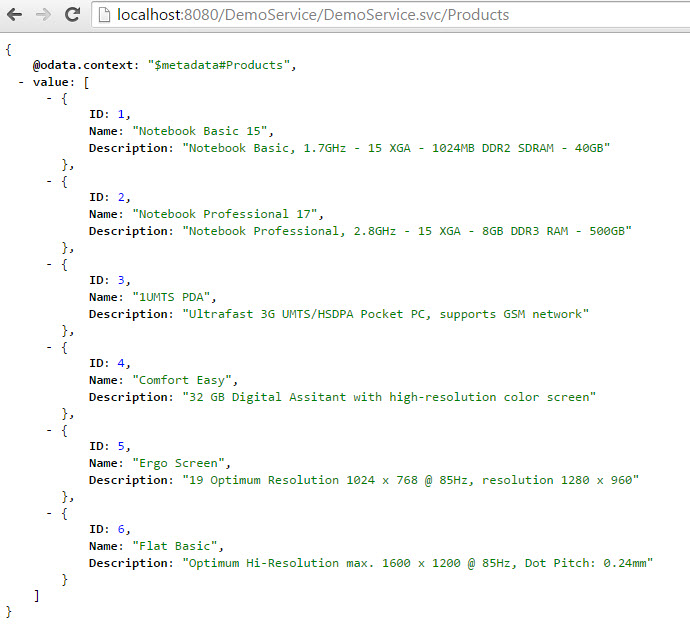
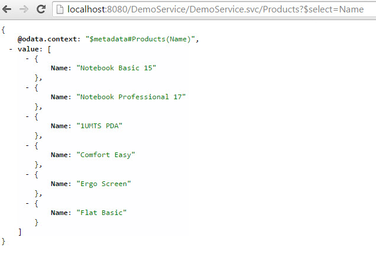
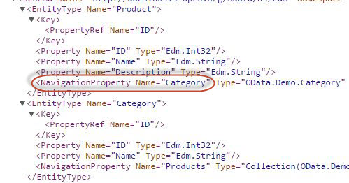
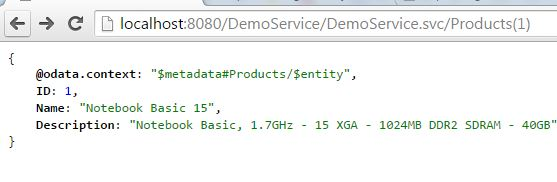
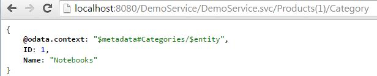
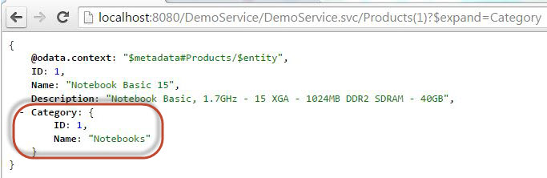
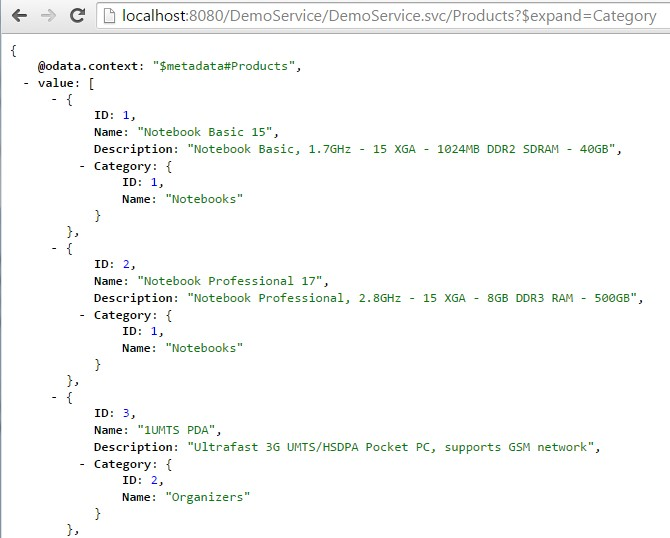

How to build an OData Service with Olingo V4¶
Part 5.2: System Query Options: $select, $expand¶
Introduction¶
In the present tutorial, we will continue implementing OData system query options.
After we have learned the rather simple system query options $top, $skip and $count in the previous tutorial, we’re going to deal with $select and $expand in the present tutorial.
Note:
The final source code can be found in the project git repository.
A detailed description how to checkout the tutorials can be found here.
This tutorial can be found in subdirectory \samples\tutorials\p6_queryoptions-es
Disclaimer:
Again, in the present tutorial, we’ll focus only on the relevant implementation, in order to keep the code small and simple. The sample code as it is, shouldn’t be reused for advanced scenarios.
Table of Contents
- Prerequisites
- Preparation
- Implementating system query options
- Implement
$select - Implement
$expand
- Implement
- Run the implemented service
- Summary
- Links
1. Prerequisites¶
Same prerequisites as in Tutorial Part 4: Navigation as well as basic knowledge about the concepts presented there.
Furthermore, basic knowledge about System Query Options (see Tutorial Part 5.1) is helpful.
2. Preparation¶
Follow Tutorial Part 4: Navigation or as shortcut import Part 4: Navigation into your Eclipse workspace.
Afterwards do a Deploy and run: it should be working.
3. Implementation¶
Open the class myservice.mynamespace.service.DemoEntityProcessor
The method readEntity() contains the code for navigation which was treated in Tutorial Part 4. In the current tutorial we want to focus on query options and to keep the code as simple as possible, therefore we delete the code of the readEntity() method and start from scratch.
3.1. Implement $select¶
Background
When requesting an entity collection from the backend, the OData service returns a list of entities and each entity contains a list of properties.
In some cases, the user might not actually need all the properties. As such, he wants to tell the server to return only those properties that he is interested in.
OData supports this requirement with the system query option $select.
This parameter can be specified in the following ways:
- Specify one property name only:
$select=Name - Specify a comma-separated list of properties:
$select=Name,Description - Specify a star to include all properties:
$select=*
Example
First, just to remember how the full payload looks like, the “normal” query of the product without query options:
http://localhost:8080/DemoService/DemoService.svc/Products

The following request provides only one property for each entry in the collection:
http://localhost:8080/DemoService/DemoService.svc/Products?$select=Name

Implementation
The following section describes how to enable the EntityProcessor class and the readEntity() method for $select.
Because we start from scratch with the empty readEntity() method, we have to write a bit preparation code before we start with the implementation of the $select.
The following lines are a copy of the Tutorial Part 2 and are necessary to fetch the data for a single entity.
// 1. retrieve the Entity Type
List<UriResource> resourcePaths = uriInfo.getUriResourceParts();
UriResourceEntitySet uriResourceEntitySet = (UriResourceEntitySet) resourcePaths.get(0);
EdmEntitySet edmEntitySet = uriResourceEntitySet.getEntitySet();
// 2. retrieve the data from backend
List<UriParameter> keyPredicates = uriResourceEntitySet.getKeyPredicates();
Entity entity = storage.readEntityData(edmEntitySet, keyPredicates);
The Olingo library parses the $select option from the request and provides support in the serializer to serialize only the selected properties.
Based on that the simplest implementation for $select is to get the SelectOption from the request (via UriInfo object) and pass this together with the enties to the serializer.
The drawback of this implementation is, that the full payload is fetched from the backend and afterwards the unnecessary properties are removed. From performance point of view, this is not optimal. It would be better to fetch only the requested properties from the backend. Which of course depends on the backend.
In this tutorial we use the simple implementation to show the concept for $select so that there are only a few steps that have to be done by us.
-
We have to get the SelectOption from the UriInfo:
// 3rd: apply system query options SelectOption selectOption = uriInfo.getSelectOption(); -
We have to take care about the context URL, which is different in case that
$selectis used. Again, the Olingo library provides some support, which we use to build the select list that has to be passed to the ContextURL builder:// we need the property names of the $select, in order to build the context URL String selectList = odata.createUriHelper().buildContextURLSelectList(edmEntityType, null, selectOption); ContextURL contextUrl = ContextURL.with() .entitySet(edmEntitySet) .selectList(selectList) .build(); -
Furthermore, the serializer has to know about the usage of
$select. Therefore, the serializer options instance is initialized with the selectOption object that we’ve obtained above. If this object is not null, then the serializer will take care to consider the$selectstatementEntityCollectionSerializerOptions opts = EntityCollectionSerializerOptions.with() .contextURL(contextUrl) .select(selectOption) .build();
The full implementation of the readEntityCollection() method:
public void readEntityCollection(ODataRequest request, ODataResponse response,
UriInfo uriInfo, ContentType responseFormat)
throws ODataApplicationException, SerializerException {
// 1st retrieve the requested EdmEntitySet from the uriInfo
List<UriResource> resourcePaths = uriInfo.getUriResourceParts();
UriResourceEntitySet uriResourceEntitySet = (UriResourceEntitySet) resourcePaths.get(0);
EdmEntitySet edmEntitySet = uriResourceEntitySet.getEntitySet();
// 2nd: fetch the data from backend for this requested EntitySetName
EntityCollection entityCollection = storage.readEntitySetData(edmEntitySet);
// 3rd: apply system query options
// Note: $select is handled by the lib, we only configure ContextURL + SerializerOptions
// for performance reasons, it might be necessary to implement the $select manually
SelectOption selectOption = uriInfo.getSelectOption();
// 4th: create a serializer based on the requested format (json)
ODataSerializer serializer = odata.createSerializer(responseFormat);
// and serialize the content: transform from the EntitySet object to InputStream
EdmEntityType edmEntityType = edmEntitySet.getEntityType();
// we need the property names of the $select, in order to build the context URL
String selectList = odata.createUriHelper().buildContextURLSelectList(edmEntityType,
null, selectOption);
ContextURL contextUrl = ContextURL.with()
.entitySet(edmEntitySet)
.selectList(selectList)
.build();
// adding the selectOption to the serializerOpts will tell the lib to do the job
final String id = request.getRawBaseUri() + "/" + edmEntitySet.getName();
EntityCollectionSerializerOptions opts = EntityCollectionSerializerOptions.with()
.contextURL(contextUrl)
.select(selectOption)
.id(id)
.build();
SerializerResult serializerResult = serializer.entityCollection(srvMetadata, edmEntityType,
entityCollection, opts);
// 5th: configure the response object: set the body, headers and status code
response.setContent(serializerResult.getContent());
response.setStatusCode(HttpStatusCode.OK.getStatusCode());
response.setHeader(HttpHeader.CONTENT_TYPE, responseFormat.toContentTypeString());
}
3.2. Implement $expand¶
Background
In order to understand the $expand system query option, let’s first quickly recap what we’ve learned in the navigation-tutorial:
-
In order to be able to navigate from one entity to another entity, we need at least 2 EntityTypes and at least one NavigationProperty
 -
We can invoke one single entity, e.g. display one product:
 -
And we can follow the navigation to the second entity, by appending the navigation property name, e.g. invoke the category of that product. As we’ve seen in the metadata above, the name of the navigation property is Category

We have executed two requests to our OData service, in order to obtain the data for the product and for its related category.
Now, since the category info is so tightly bound to the selected product, we’d like to get the same info by executing only one request.
This can be achieved with the $expand
The URL is built as follows:
- specify the request URI for the single read operation: http://localhost:8080/DemoService/DemoService.svc/Products(1)
- append the
?to indicate that system query options will follow - append the
$expand - specify the name of the desired navigation property: http://localhost:8080/DemoService/DemoService.svc/Products(1)?$expand=Category
As a result, the data of both entities is provided within one payload.
The data of the target entity is presented inline, which means as a child element of the source entity.

One more advantage is that the system query option $expand can also be applied to an entity collection:

More details can be found in the OData specification - Protocol and OData specification - Url Conventions
Implementation
In the following section, we’ll focus on the implementation of the $expand for a single entity request e.g. http://localhost:8080/DemoService/DemoService.svc/Products(1)?$expand=Category
Note:
The implementation for the entity collection is the same, just that we have to loop over all entities and apply the below code to each of them.
In brief, what we have to do is: fetch the data for both entities and merge into one entity
We can distinguish the following steps:
- Retrieve the ExpandOption from Uri.
In our example:$expand=Category - Retrieve the (target) EdmEntityType which corresponds to the expand.
In our example: Category - Build the response data for the entity, enriched with the data of the expand entity.
In our example: product1 merged with category1
Let's have a detailed look.
Step 1: Retrieve the ExpandOption from Uri¶
We need the retrieve the ExpandOption from the UriInfo:
ExpandOption expandOption = uriInfo.getExpandOption();
As usual, if this object is null, then the user hasn’t used the $expand in his request, and we don’t need to do anything.
Step 2: Retrieve the EdmEntityType corresponding to the expand¶
In brief: ExpandOption -> NavigationProperty -> EdmEntityType
From the ExpandOption, we can get the ExpandItems.
An ExpandItem corresponds to the name of the navigation property.
So for the URL http://localhost:8080/DemoService/DemoService.svc/Products?$expand=Category we get one ExpandItem, which corresponds to the navigation property Category.
In the present tutorial, we’re keeping the implementation as simple as possible.
So we’re relying on the fact that our example service only contains one navigation property per entity type.
Therefore, we can directly access the first ExpandItem.
ExpandItem expandItem = expandOption.getExpandItems().get(0);
Note:
Most OData services will have more entity types and more navigation possibilities. In such services, it might be desired to invoke $expand with more than one navigation property, like for example: http://localhost:8080/DemoService/DemoService.svc/Products?$expand=Category,Supplier,Sales
Such $expand expression is not considered in our example.
Now that we have the ExpandItem, the next step is to extract the navigation property (EdmNavicationProperty) from it.
For the case of a request with $expand=* (to expand all navigation items which is checked via expandItem.isStar()), all known EdmNavigationPropertyBindings from the expanded EdmEntityType have to be checked.
For our (reduced) sample service we know that only one navigation exists, hence the implementation is:
if(expandItem.isStar()) {
List<EdmNavigationPropertyBinding> bindings = edmEntitySet.getNavigationPropertyBindings();
// we know that there are navigation bindings
// however normally in this case a check if navigation bindings exists is done
if(!bindings.isEmpty()) {
// can in our case only be 'Category' or 'Products', so we can take the first
EdmNavigationPropertyBinding binding = bindings.get(0);
EdmElement property = edmEntitySet.getEntityType().getProperty(binding.getPath());
// we don't need to handle error cases, as it is done in the Olingo library
if(property instanceof EdmNavigationProperty) {
edmNavigationProperty = (EdmNavigationProperty) property;
}
}
} else {
...
For the case of a request with defined name of navigation property to expand (e.g. $expand=Category), we have to ask the ExpandItem for its list if resource segments.
The reason why an ExpandItem can be formed by multiple segments is that a navigation property can be in a ComplexType, such that it would be required to address it by a path.
In our simple example, we don’t need to specify a path, therefore we can safely write
...
} else {
// can be 'Category' or 'Products', no path supported
UriResource uriResource = expandItem.getResourcePath().getUriResourceParts().get(0);
// we don't need to handle error cases, as it is done in the Olingo library
if(uriResource instanceof UriResourceNavigation) {
edmNavigationProperty = ((UriResourceNavigation) uriResource).getProperty();
}
}
This uriResource corresponds to the navigation property that we want to extract.
We expect that the uriResource is of type UriResourceNavigation, such that we can cast.
The UriResourceNavigation can then be asked for the NavigationProperty which in turn delivers the corresponding EdmEntityType, which we’re interested in.
Finally after one of above cases we have the necessary EdmNavigationProperty from which we need the EdmEntityType and the name of the navigation property to build the resopnse data.
if(edmNavigationProperty != null) {
EdmEntityType expandEdmEntityType = edmNavigationProperty.getType();
String navPropName = edmNavigationProperty.getName();
...
Step 3: Build the response data¶
Lets follow our example.
As we have said, we have to merge the data of two entities.
The first one, the product, is already fetched, as we’ve done that earlier in the code:
Entity entity = storage.readEntityData(edmEntitySet, keyPredicates);
This entity corresponds to the product.
Now we’re ready to fetch the category, as we’ve already retrieved the EdmEntityType from the expand expression.
We can invoke a helper method that we created in Tutorial Part 4 (Navigation), a helper method that is located in our database-mock and that returns the category entity corresponding to a given product entity:
Entity expandEntity = storage.getRelatedEntity(entity, expandEdmEntityType);
In our example, this expandEntity contains the data of the related category.
Now we have to merge both entities.
This is done via a Link object that contains the inline entity object.
And the link is added to the source entity.
The relevant code is:
Link link = new Link();
link.setTitle(navPropName);
link.setInlineEntity(expandEntity);
entity.getNavigationLinks().add(link);
Note:
It is important to set the correct navigation property name, otherwise the linking doesn’t work and the inline data cannot be displayed.
Final step¶
Now that the response data has been built, we need to tell the serializer to consider the expand, otherwise the data will not be displayed.
Also, the expandOption has to be considered while building the ContextUrl.
String selectList = odata.createUriHelper().buildContextURLSelectList(
edmEntityType, expandOption, selectOption);
ContextURL contextUrl = ContextURL.with()
.entitySet(edmEntitySet)
.selectList(selectList)
.suffix(Suffix.ENTITY).build();
// make sure that `$expand` and $select are considered by the serializer
// adding the selectOption to the serializerOpts will actually tell the lib to do the job
final String id = request.getRawBaseUri() + "/" + edmEntitySet.getName();
EntitySerializerOptions opts = EntitySerializerOptions.with()
.contextURL(contextUrl)
.select(selectOption)
.expand(expandOption)
.id(id)
.build();
Note:
The complete readEntity(...) method can be found in the Appendix at the end of the site or together with the readEntityCollection(...) method in the sample project zip (md5, sha512, pgp).
3.3. Implement $expand with options¶
Background
As of OData v4 spec, the expand can also be further refined with system query options
Some samples:
-
Expand an navigation with only the first entity:
-
A common use case would be the following request, where all products are displayed along with their corresponding category, but only the interesting properties:
-
With respect to the system query options that are applied to the expand, multiple options are allowed, which are separated by semicolon, e.g.
-
The $select option can itself define a list of comma-separated properties:
Implementation
The code for applying system query options to the $expand is similar to what is described in the Tutorial Part 5.1.
We only need to know from where to get the information about the query options used in the request URL: It is located in the ExpandItem instance.
The procedure is:
- Get the data for the navigation property (the normal expand)
- Refine the result by applying the system query options
Support for $select with $expand
Like described in section 3.1, the Olingo library provides support and convenience methods for $select implementation. So the necessary creation and pass of the selectList to the creation of ContextURL and pass of the selectOptions to the EntitySerializerOptions is already done (see also code sample in the final step in section 3.2).
4. Run the implemented service¶
After building and deploying your service to your server, you can try the following URLs:
-
The “normal” payload without query option
-
Using
$select- http://localhost:8080/DemoService/DemoService.svc/Products(1)?$select=Name
- http://localhost:8080/DemoService/DemoService.svc/Products(1)?$select=Description
- http://localhost:8080/DemoService/DemoService.svc/Products(1)?$select=Name,Description
- http://localhost:8080/DemoService/DemoService.svc/Products(1)?$select=*
- http://localhost:8080/DemoService/DemoService.svc/Categories(1)?$select=Name
-
Using
$expand- http://localhost:8080/DemoService/DemoService.svc/Products(1)?$expand=Category
- http://localhost:8080/DemoService/DemoService.svc/Products(1)?$expand=Category
- http://localhost:8080/DemoService/DemoService.svc/Categories(1)?$expand=Products
- http://localhost:8080/DemoService/DemoService.svc/Categories(1)?$expand=*
-
Using
$selectand$expand -
Using
$expandwith nested$select
We’re interested in Product and the name of its Category -
Using
$selectand$expandwith nested $select
We’re interested in Product and its Category, but only the name of both
Note: The same system query option expressions can be applied to entity collections
5. Summary¶
In this tutorial we have learned the basics of the $select and $expand system query options within the OData context as well as how to implement those features with the Apache Olingo library by using the provided convenience and support methods.
6. Links¶
Tutorials¶
- Tutorial OData V4 service part 1: Read Entity Collection
- Tutorial OData V4 service part 2: Read Entity, Read Property
- Tutorial OData V4 service part 3: Write (Create, Update, Delete Entity)
- Tutorial OData V4 service, part 4: Navigation
- Tutorial OData V4 service, part 5.1: System Query Options $top, $skip, $count (this page)
- Tutorial OData V4 service, part 5.2: System Query Options $select, $expand (this page)
- Tutorial OData V4 service, part 5.3: System Query Options $orderby
- Tutorial OData V4 service, part 5.4: System Query Options $filter
- Tutorial ODATA V4 service, part 6: Action and Function Imports
- Tutorial ODATA V4 service, part 7: Media Entities
- Tutorial OData V4 service, part 8: Batch Request support
- Tutorial OData V4 service, part 9: Handling "Deep Insert" requests
Code and Repository¶
- Git Repository
- Guide - To fetch the tutorial sources
- Demo Service source code as zip file (contains all tutorials)
Further reading¶
7. Appendix¶
Sample code snippets¶
readEntity(...)
public void readEntity(ODataRequest request, ODataResponse response, UriInfo uriInfo, ContentType responseFormat)
throws ODataApplicationException, SerializerException {
// 1. retrieve the Entity Type
List<UriResource> resourcePaths = uriInfo.getUriResourceParts();
// Note: only in our example we can assume that the first segment is the EntitySet
UriResourceEntitySet uriResourceEntitySet = (UriResourceEntitySet) resourcePaths.get(0);
EdmEntitySet edmEntitySet = uriResourceEntitySet.getEntitySet();
// 2. retrieve the data from backend
List<UriParameter> keyPredicates = uriResourceEntitySet.getKeyPredicates();
Entity entity = storage.readEntityData(edmEntitySet, keyPredicates);
// 3. apply system query options
// handle $select
SelectOption selectOption = uriInfo.getSelectOption();
// in our example, we don't have performance issues, so we can rely upon the handling in the Olingo lib
// nothing else to be done
// handle $expand
ExpandOption expandOption = uriInfo.getExpandOption();
// in our example: http://localhost:8080/DemoService/DemoService.svc/Categories(1)/$expand=Products
// or http://localhost:8080/DemoService/DemoService.svc/Products(1)?$expand=Category
if(expandOption != null) {
// retrieve the EdmNavigationProperty from the expand expression
// Note: in our example, we have only one NavigationProperty, so we can directly access it
EdmNavigationProperty edmNavigationProperty = null;
ExpandItem expandItem = expandOption.getExpandItems().get(0);
if(expandItem.isStar()) {
List<EdmNavigationPropertyBinding> bindings = edmEntitySet.getNavigationPropertyBindings();
// we know that there are navigation bindings
// however normally in this case a check if navigation bindings exists is done
if(!bindings.isEmpty()) {
// can in our case only be 'Category' or 'Products', so we can take the first
EdmNavigationPropertyBinding binding = bindings.get(0);
EdmElement property = edmEntitySet.getEntityType().getProperty(binding.getPath());
// we don't need to handle error cases, as it is done in the Olingo library
if(property instanceof EdmNavigationProperty) {
edmNavigationProperty = (EdmNavigationProperty) property;
}
}
} else {
// can be 'Category' or 'Products', no path supported
UriResource uriResource = expandItem.getResourcePath().getUriResourceParts().get(0);
// we don't need to handle error cases, as it is done in the Olingo library
if(uriResource instanceof UriResourceNavigation) {
edmNavigationProperty = ((UriResourceNavigation) uriResource).getProperty();
}
}
// can be 'Category' or 'Products', no path supported
// we don't need to handle error cases, as it is done in the Olingo library
if(edmNavigationProperty != null) {
EdmEntityType expandEdmEntityType = edmNavigationProperty.getType();
String navPropName = edmNavigationProperty.getName();
// build the inline data
Link link = new Link();
link.setTitle(navPropName);
link.setType(Constants.ENTITY_NAVIGATION_LINK_TYPE);
link.setRel(Constants.NS_ASSOCIATION_LINK_REL + navPropName);
if(edmNavigationProperty.isCollection()){ // in case of Categories(1)/$expand=Products
// fetch the data for the $expand (to-many navigation) from backend
// here we get the data for the expand
EntityCollection expandEntityCollection = storage.getRelatedEntityCollection(entity, expandEdmEntityType);
link.setInlineEntitySet(expandEntityCollection);
link.setHref(expandEntityCollection.getId().toASCIIString());
} else { // in case of Products(1)?$expand=Category
// fetch the data for the $expand (to-one navigation) from backend
// here we get the data for the expand
Entity expandEntity = storage.getRelatedEntity(entity, expandEdmEntityType);
link.setInlineEntity(expandEntity);
link.setHref(expandEntity.getId().toASCIIString());
}
// set the link - containing the expanded data - to the current entity
entity.getNavigationLinks().add(link);
}
}
// 4. serialize
EdmEntityType edmEntityType = edmEntitySet.getEntityType();
// we need the property names of the $select, in order to build the context URL
String selectList = odata.createUriHelper().buildContextURLSelectList(edmEntityType, expandOption, selectOption);
ContextURL contextUrl = ContextURL.with().entitySet(edmEntitySet)
.selectList(selectList)
.suffix(Suffix.ENTITY)
.build();
// make sure that $expand and $select are considered by the serializer
// adding the selectOption to the serializerOpts will actually tell the lib to do the job
EntitySerializerOptions opts = EntitySerializerOptions.with()
.contextURL(contextUrl)
.select(selectOption)
.expand(expandOption)
.build();
ODataSerializer serializer = this.odata.createSerializer(responseFormat);
SerializerResult serializerResult = serializer.entity(srvMetadata, edmEntityType, entity, opts);
// 5. configure the response object
response.setContent(serializerResult.getContent());
response.setStatusCode(HttpStatusCode.OK.getStatusCode());
response.setHeader(HttpHeader.CONTENT_TYPE, responseFormat.toContentTypeString());
}
Copyright © 2013-2021, The Apache Software Foundation
Apache Olingo, Olingo, Apache, the Apache feather, and
the Apache Olingo project logo are trademarks of the Apache Software
Foundation.